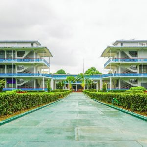

World wide Sayar Pu Zaw Pue was held in 2016 and many alumi students of RIT attended and paid respects to their beloved teacher.
DEPARTMENT PUBLISHED
PROFESSIONAL LECTURES
STUDENT ENROLLMENT
 Ministry of Education Yangon Technology.
Ministry of Education Yangon Technology.
 Myanmar's first divploma Progremme in...
7th WWSPZP
Myanmar's first divploma Progremme in...
7th WWSPZP
 Swal Daw leaf
Swal Daw leaf
 Rector's collaborative visit to University...
Rector's collaborative visit to University...
 Training of IoT and environmental...
Training of IoT and environmental...
|  | Event Two November 18,2019 |
|
Event One November 18,2019 |